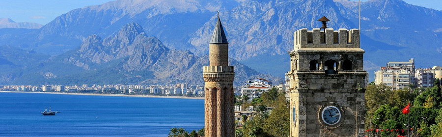

Отдых на курортах Турции — это замечательная возможность отрешиться от суеты городских будней, побаловать себя солнечными ваннами, купанием в море и гастрономическими изысками национальной кухни. Туризм для Турции — одна из важных статей дохода. Поэтому на любом курорте Турции вас приветливо встретят и предложат массу развлечений на любой вкус. В Турции можно летать на парашюте, кататься на лыжах, сплавляться на рафтах по горным рекам, но главной достопримечательностью Турции было и остается лазурное Средиземное море. Прибрежные курорты Турции постоянно развиваются, строятся новые отели, аквапарки, расширяется перечень околоводных аттракционов для туристов. Выбрать самый лучший курорт Турции практически невозможно, у каждого есть свои преимущества перед остальными.
Анталия – несомненно, самый знаменитый средиземноморский курорт Турции. Город расположился на юге страны, у края просторной плодородной равнины, и является административным центром одноименной провинции. Эту местность в древности называли Памфилия. Раскинувшаяся в живописной бухте, утопающей в пышной зелени пальм, олеандров и лимонных деревьев, отражающихся в лазурно-голубом море, Анталия с трех сторон окружена высокими хребтами Таврских гор, чьи заснеженные вершины словно венчают ее царственной короной.
Поросшие соснами горы создают роскошный фон для морского курорта Мармарис на юго-западе Турции. Это популярный порт для круизных судов и яхт и любимое место для британских поклонников недорогого отдыха. В Мармарисе есть множество ресторанов быстрого питания, восстановленный замок Сулеймана Великого и привлекательный старый квартал с мощеными улицами. Если покинуть шумный город, любителям лодочных прогулок представится возможность совершить приятную однодневную поездку на полуостров Датча с его пещерами и заливами.
Фетхие славится будто сошедшими с открыток золотыми песками, лесистыми горами и милями лазурного моря. Это один из самых посещаемых круизных портов на Эгейском побережье Турции. Сам город не менее привлекателен — его зеленые набережные, оживленные базары и древние руины манят многочисленных туристов.
Более подробную информацию можно найти здесь